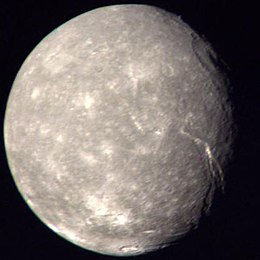

Uranus
Uranus is the 7th planet from the sun and the third largest in the solar system. It is an ice giant made with hydrogen, helium, and a little but of methane, and is very cold and windy. Days take 17 hours, while it takes 84 earth years to go around the sun. It spins on it's sides, which leads to strange seasons: 21 years of nighttime for winter, 21 years of daytime for summer, and 42 years of day and night for spring and fall!
Did You Know?
Uranus
Uranus is the 7th planet from the sun and the third largest in the solar system. It is an ice giant made with hydrogen, helium, and a little but of methane, and is very cold and windy. Days take 17 hours, while it takes 84 earth years to go around the sun. It spins on it's sides, which leads to strange seasons: 21 years of nighttime for winter, 21 years of daytime for summer, and 42 years of day and night for spring and fall!
Did You Know?
- It has 27 moons and faint rings
- It was the first planet found with a telescope
- Voyager 2 is the only spacecraft to fly past Uranus
- It toates east to west, like Venus

Uranus

Uranus's Rings

Uranus's largest moon, Titania